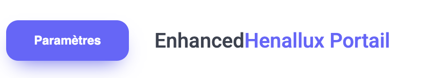
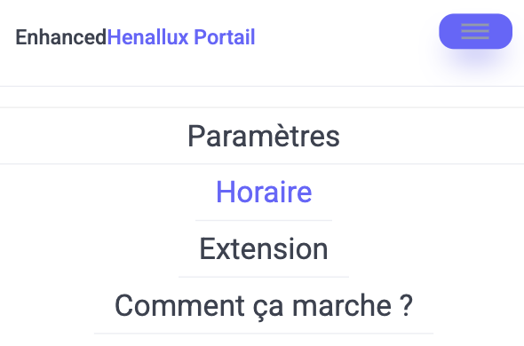
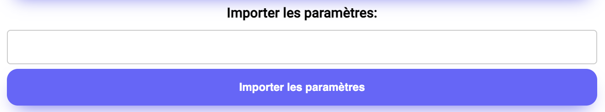

Voici comment utiliser le site pour vous afficher un horaire suberbement personnalisé
Pour utiliser correctement l'horaire sur le site, vous aurez besoin de la derniere version de l'extension Google Chrome
Les cours de la semaine en cours et ceux de la semaine suivante sont sauvegardés dans le cache. Lors du chargement du site, ces cours sont chargés instantanément.
Sur PC
Sur Mobile
Si vous utilisez déjà l'extension Google Chrome, vous pouvez transférer vos paramètres en cliquant sur le bouton Exporter les paramètres au-dessus de l'horaire dans le portail Henallux.
Pour importer sur le site, allez dans les paramètres et copiez-les dans la section adéquate puis appuyez sur le bouton pour importer les paramètres.
